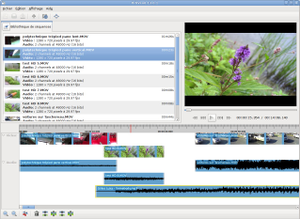

PiTiVi
Dieser Artikel wurde für die folgenden Ubuntu-Versionen getestet:
Ubuntu 16.04 Xenial Xerus
Ubuntu 14.04 Trusty Tahr
Zum Verständnis dieses Artikels sind folgende Seiten hilfreich:
PiTiVi  ist eine Anwendung zur Videobearbeitung, die das Multimedia-Framework GStreamer verwendet. Somit können alle Videoformate gelesen oder geschrieben werden, die auch von GStreamer unterstützt werden. Primäres Ziel ist allerdings, das freie Ogg-Containerformat der Xiph.org-Foundation zu fördern.
ist eine Anwendung zur Videobearbeitung, die das Multimedia-Framework GStreamer verwendet. Somit können alle Videoformate gelesen oder geschrieben werden, die auch von GStreamer unterstützt werden. Primäres Ziel ist allerdings, das freie Ogg-Containerformat der Xiph.org-Foundation zu fördern.
Ebenso wie Cinelerra oder OpenShot unterstützt PiTiVi eine nicht-lineare Videobearbeitung, d.h. Szenen können beliebig zusammengeschnitten werden. Die Bedienung von PiTiVi ist sehr einfach und ist damit für Heimanwender gut geeignet. PiTiVi bietet folgende Funktionen:
Aufzeichnen und Digitalisieren von Videosignalen (Kamera, Videorekorder)
Bearbeiten/Editieren von Videodaten
Zusammenstellen von Videosequenzen (Schnitt)
Diese Vielseitigkeit macht PiTiVi zu einem vollständigen Werkzeug für die Videobearbeitung.
Installation¶
PiTiVi kann aus den offiziellen Paketquellen installiert [1] werden:
pitivi (universe)
 mit apturl
mit apturl
Paketliste zum Kopieren:
sudo apt-get install pitivi
sudo aptitude install pitivi
Optional können folgende Erweiterungen installiert werden.
frei0r-plugins (universe, Erweiterung für Videoeffekte)
gstreamer1.0-libav (universe, Gstreamer Video-Plugin)
gstreamer1.0-plugins-bad (universe, Gstreamer-Plugins für weitere Formate)
gstreamer1.0-plugins-ugly (universe, Gstreamer Extra-Plugins)
mit apturl
Paketliste zum Kopieren:
sudo apt-get install frei0r-plugins gstreamer1.0-libav gstreamer1.0-plugins-bad gstreamer1.0-plugins-ugly
sudo aptitude install frei0r-plugins gstreamer1.0-libav gstreamer1.0-plugins-bad gstreamer1.0-plugins-ugly
Benutzung¶
 Bei Ubuntu-Varianten mit einem Anwendungsmenü kann das Programm über den Eintrag "Multimedia -> Pitivi Video Editor" gestartet werden [2]. Es startet mit einem neuen, noch unbenannten Projekt.
Lokal vorhandene Videodateien werden dann im Fenster links oben ("Source List") mit dem Dateinamen angezeigt. Von hier aus kann die Datei direkt mittels Doppelklick im Fenster rechts oben ("Preview") abgespielt werden.
Per Drag and Drop können Dateien in das Hauptbearbeitungsfenster unten "Timeline" gezogen, positioniert und bearbeitet werden. Z.B. ist Trimmen, Schneiden oder Teilen möglich. Zwischen verschiedenen Videos können Übergänge eingefügt werden, ebenso am Anfang oder Ende als Ein- oder Ausblenden.
Mit "Projekt speichern" wird der Inhalt der "Timeline" gespeichert, so dass mit dem Laden des Projektes an gleicher Stelle weitergearbeitet werden kann.
Um aus seiner Arbeit eine Videodatei zu erstellen, wird die Funktion "Rendering" genutzt. Dabei bleiben die originalen Videodateien unverändert. Dabei ist darauf zu achten, dass
der Rechner während der eventuell langen Arbeitszeit nicht in einen Ruhe- oder Schlafmodus fährt
geeignete Codecs vorher gewählt wurden, um das Video dann auch auf anderen Rechnern korrekt wiedergeben zu können. Das kann unter "Project -> Project Settings" eingestellt werden.
Problembehebung¶
MP3 wird nicht importiert¶
Mitunter kann es zu Störungen zwischen den genutzten GStreamer-Codecs und installierten Fluendo-Plugins kommen, insbesondere können dann mp3-enthaltende Dateien nicht korrekt importiert werden. Es hilft, diese Plugins zu deinstallieren.
Der Ton ist unschön¶
Standardmäßig wird die Audiospur mit 44100 Hz gerendert. Falls Spuren mit einem Sampling von 48 kHz enthalten sind, müssen die Projekteinstellungen entsprechend angepasst werden.
Rendering startet nicht¶
In dem Falle soll hilfreich sein, das Projekt kurz anzuspielen bzw. die aktuelle Position in der Timeline etwas zu verschieben.

 Übersichtsartikel
Übersichtsartikel- Erstellt mit Inyoka
-
 2004 – 2017 ubuntuusers.de • Einige Rechte vorbehalten
2004 – 2017 ubuntuusers.de • Einige Rechte vorbehalten
Lizenz • Kontakt • Datenschutz • Impressum • Serverstatus -
Serverhousing gespendet von